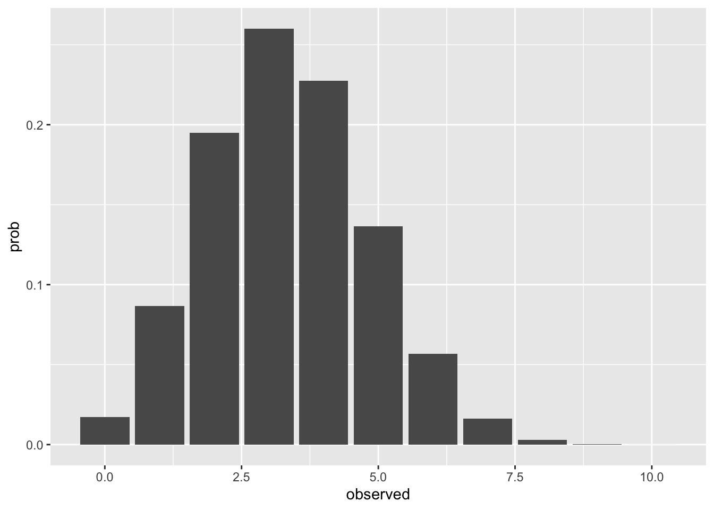
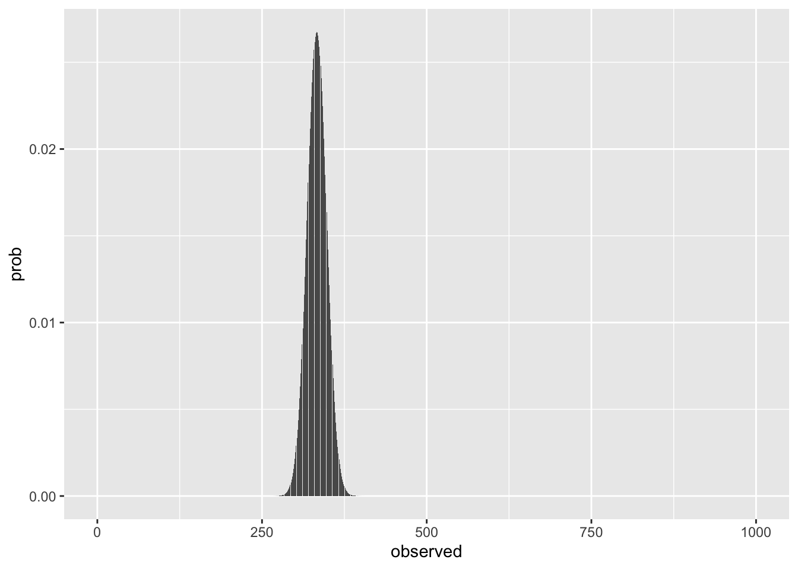
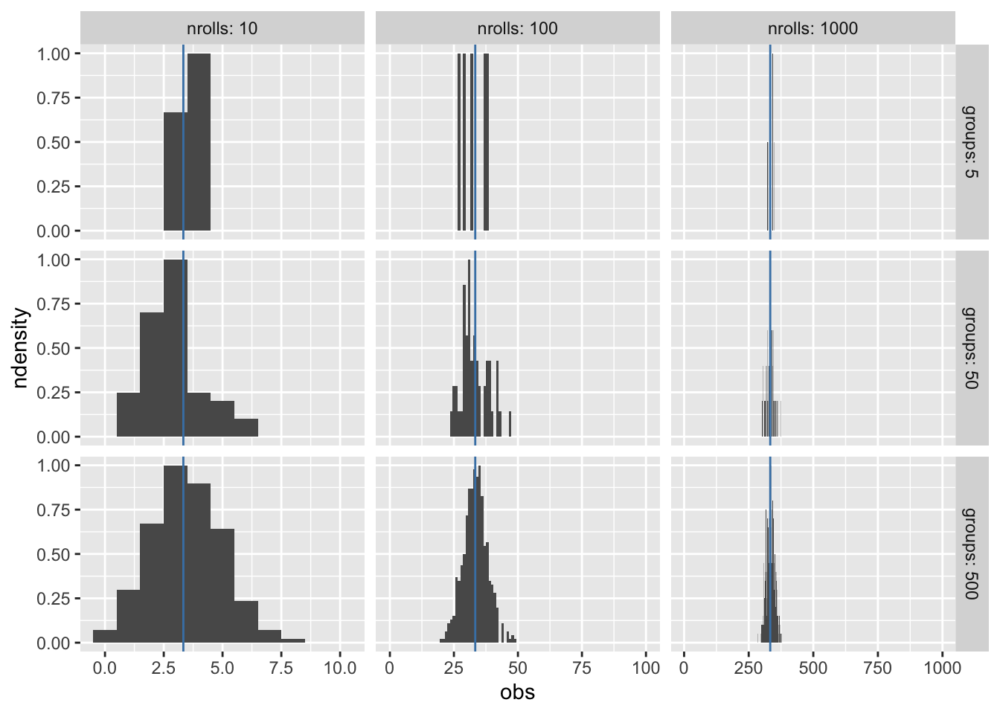
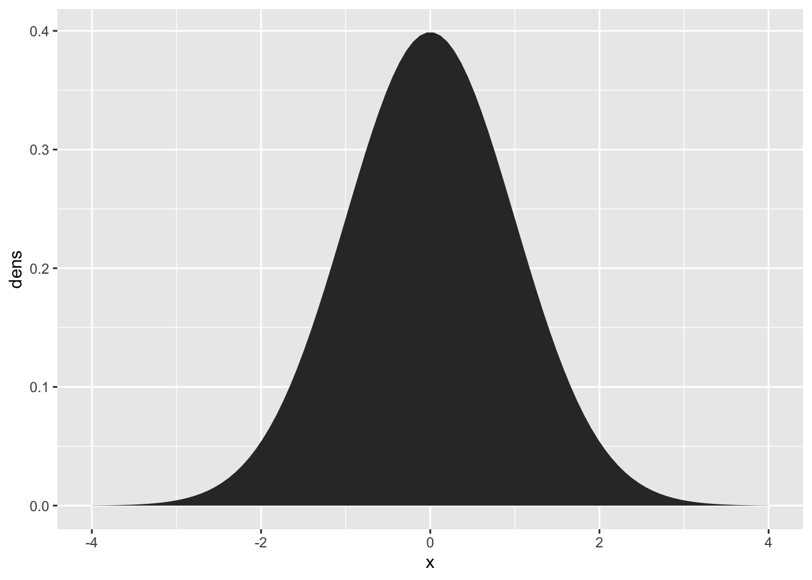
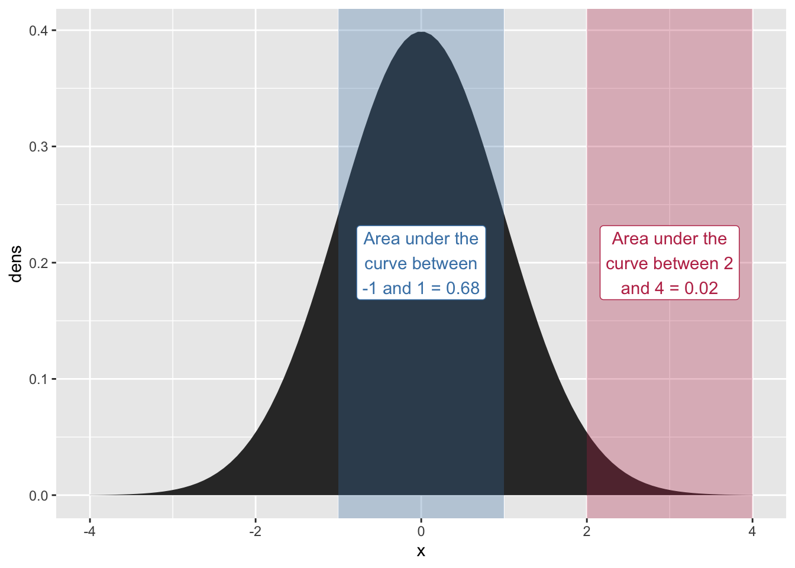
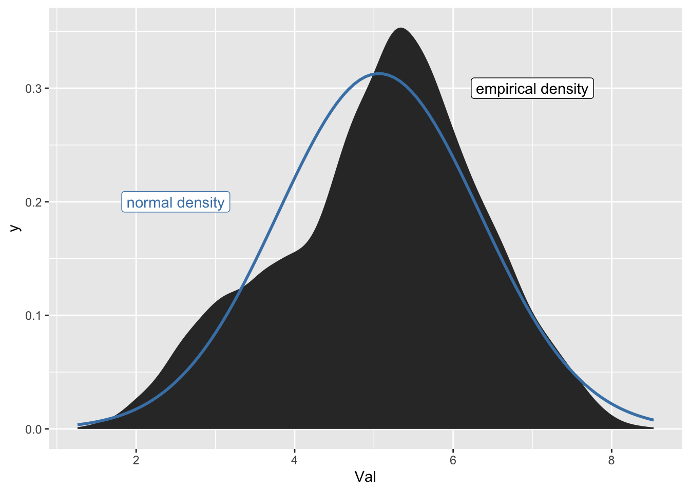

── Attaching packages ─────────────────────────────────────── tidyverse 1.3.2 ──
✔ ggplot2 3.4.0 ✔ purrr 1.0.1
✔ tibble 3.1.8 ✔ dplyr 1.1.0
✔ tidyr 1.3.0 ✔ stringr 1.5.0
✔ readr 2.1.3 ✔ forcats 0.5.2
── Conflicts ────────────────────────────────────────── tidyverse_conflicts() ──
✖ dplyr::filter() masks stats::filter()
✖ dplyr::lag() masks stats::lag()emo <- read_csv("https://raw.githubusercontent.com/bodowinter/applied_statistics_book_data/master/warriner_2013_emotional_valence.csv")Rows: 13915 Columns: 2
── Column specification ────────────────────────────────────────────────────────
Delimiter: ","
chr (1): Word
dbl (1): Val
ℹ Use `spec()` to retrieve the full column specification for this data.
ℹ Specify the column types or set `show_col_types = FALSE` to quiet this message.um <- read_tsv("https://bit.ly/3JdeSbx")Rows: 26060 Columns: 14
── Column specification ────────────────────────────────────────────────────────
Delimiter: "\t"
chr (3): word, next_seg, idstring
dbl (11): start_time, end_time, vowel_start, vowel_end, nasal_start, nasal_e...
ℹ Use `spec()` to retrieve the full column specification for this data.
ℹ Specify the column types or set `show_col_types = FALSE` to quiet this message.Discrete Probability distributions
Our dice rolling experiment is an example of a discrete probability distribution. This code chunk plots the predicted probability of observing \(n\) ⚀ or ⚅ on 10 rolls.
## Define how many rolls
nrolls <- 10
## get the probability in a dataframe
tibble(
## possible observations
observed = 0:nrolls,
## dbinom for the probability distribution
prob = dbinom(
## possible observations
x = observed,
## number of rolls
size = nrolls,
## probability of success
prob = 2/6
)
) |>
## the plotting code
ggplot(aes(x = observed, y = prob))+
geom_col()
If we have more rolls, the range of probability density, relative to the whole range of possible observations, decreases.
## Define how many rolls
nrolls <- 1000
## get the probability in a dataframe
tibble(
## possible observations
observed = 0:nrolls,
## dbinom for the probability distribution
prob = dbinom(
## possible observations
x = observed,
## number of rolls
size = nrolls,
## probability of success
prob = 2/6
)
) |>
## the plotting code
ggplot(aes(x = observed, y = prob))+
geom_col()
We can simulate the experiment, varying the number of groups who rolled different number of n times. Increasing the number of groups rolling a die fills in the density distribution more, but only increasing the number of rolls per group narrows the density range.
complicated code just to make the plot
set.seed(611)
expand_grid(
nrolls = c(10, 100, 1000),
groups = c(5, 50, 500),
min = 0
) |>
mutate(
expected = nrolls * (2/6)
)-> blank
## Create all combinations of rolls
## and number of groups
expand_grid(
nrolls = c(10, 100, 1000),
groups = c(5, 50, 500)
) |>
## We didn't learn about code like this,
## using it just to make the graph
mutate(
roll_df = map2(
nrolls,
groups,
\(roll, group) tibble(obs = rbinom(n = group, size = roll, prob = 2/6)))
) |>
unnest(roll_df) |>
ggplot(aes(obs))+
stat_bin(binwidth = 1,
aes(y = after_stat(ndensity))) +
geom_blank(data = blank, aes(x = nrolls, y = 0))+
geom_blank(data = blank, aes(x = min, y = 0))+
geom_vline(data = blank, aes(xintercept = expected), color = "steelblue")+
facet_grid(groups~nrolls,
label = label_both,
scales = "free")
complicated code just to make the plot
# tibble(
# rand = rbinom(n = 500, size = nrolls, prob = 2/6)
# ) |>
# ggplot(aes(x = rand)) +
# stat_bin(binwidth = 1)+
# geom_vline(xintercept = (2/6) * nrolls, color = "red")+
# expand_limits(x = c(0, nrolls))Normal Distribution
The “Normal Distribution” or “Gaussian Distribution” is a continuous probability density function. Rather than the height of the curve representing the “point probability” of a value, it represents an area that sums to 1. To get the probability of a value falling within a range of the normal distribution, you sum the area under the curve.
tibble(
x = seq(-4, 4, length = 100),
dens = dnorm(x, mean = 0, sd = 1)
) |>
ggplot(aes(x = x, y = dens)) +
geom_area()
complex code just to make the plot
one_sd_prob = round(pnorm(1) - pnorm(-1), digits = 2)
two_four_prob = round(pnorm(4) - pnorm(2), digits = 2)
tibble(
x = seq(-4, 4, length = 100),
dens = dnorm(x, mean = 0, sd = 1)
) |>
ggplot(aes(x = x, y = dens)) +
geom_area() +
annotate(
ymin = -Inf,
ymax = Inf,
xmin = -1,
xmax = 1,
geom = "rect",
alpha = 0.3,
fill = "steelblue"
)+
annotate(
x = 0,
y = 0.2,
label =
str_wrap(
glue::glue("Area under the curve between -1 and 1 = {one_sd_prob}"),
15
),
geom = "label",
color = "steelblue"
)+
annotate(
ymin = -Inf,
ymax = Inf,
xmin = 2,
xmax = 4,
geom = "rect",
alpha = 0.3,
fill = "#BE3455"
)+
annotate(
x = 3,
y = 0.2,
label =
str_wrap(
glue::glue("Area under the curve between 2 and 4 = {two_four_prob}"),
15
),
geom = "label",
color = "#BE3455"
)
One way to view how much area is under the curve, as you move from left to right, is to look at the “cumulative probability function”
Real Data
Real data is often a bit off from being normal, but might be normal-ish
emo_xbar <- mean(emo$Val)
emo_sd <- sd(emo$Val)
emo |>
ggplot(aes(x = Val))+
stat_density()+
stat_function(
fun = dnorm,
args = list(mean = emo_xbar, sd = emo_sd),
color = "steelblue",
linewidth = 1) +
annotate(x = 7, y = 0.3,
label = "empirical density",
geom = "label") +
annotate(x = 2.5, y = 0.2,
label = "normal density",
geom = "label",
color = "steelblue")
Some definitions
- mean
-
The sum of all values, divided by the number of observations
- median
-
The value at which 50% of the data is less than it, and 50% is more.
The mean and median are the same for symmetrical distributions, like the normal distribution.
Call:
lm(formula = Val ~ 1, data = emo)
Residuals:
Min 1Q Median 3Q Max
-3.8038 -0.8138 0.1362 0.8862 3.4662
Coefficients:
Estimate Std. Error t value Pr(>|t|)
(Intercept) 5.06385 0.01081 468.5 <2e-16 ***
---
Signif. codes: 0 '***' 0.001 '**' 0.01 '*' 0.05 '.' 0.1 ' ' 1
Residual standard error: 1.275 on 13914 degrees of freedomReuse
CC-BY-SA 4.0